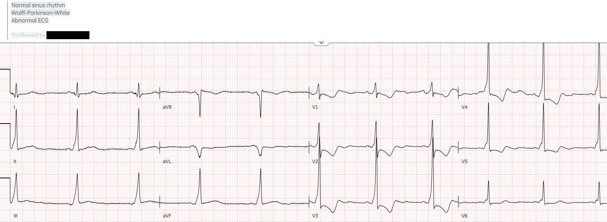
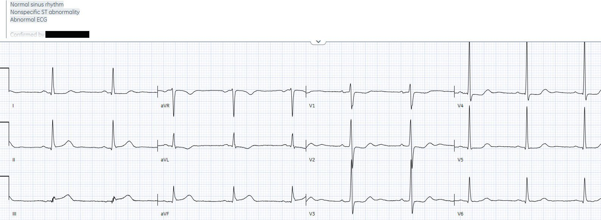
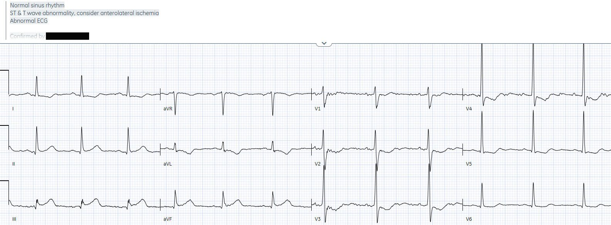
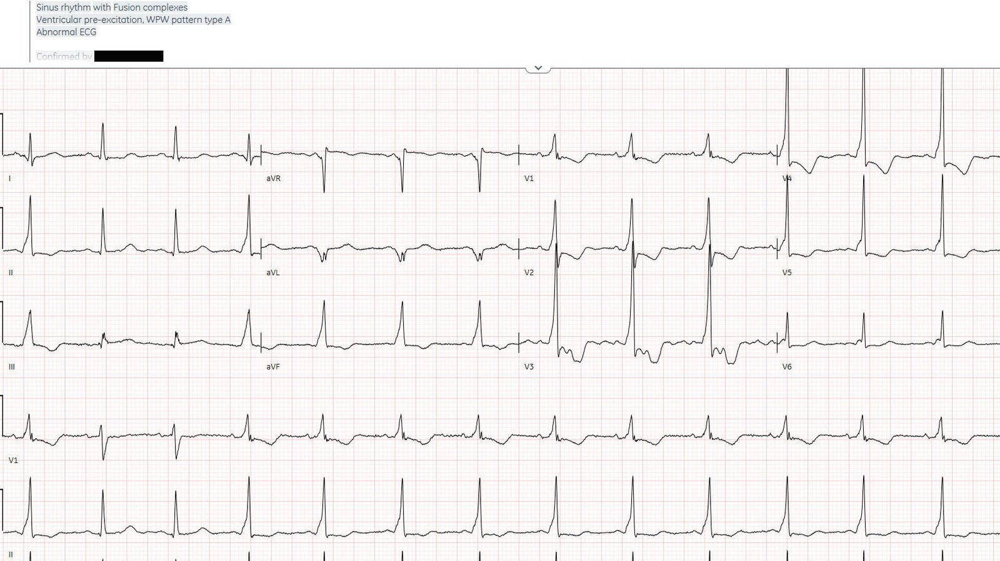
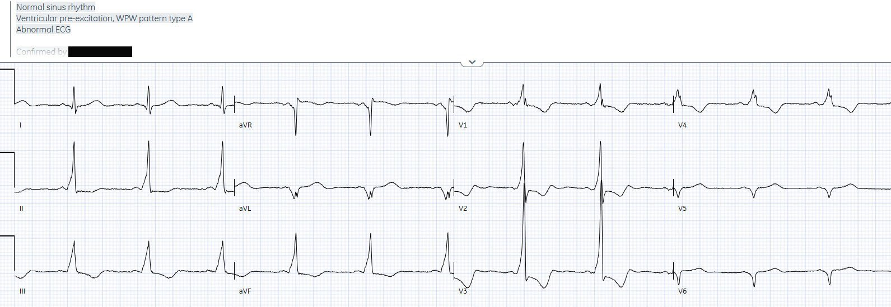
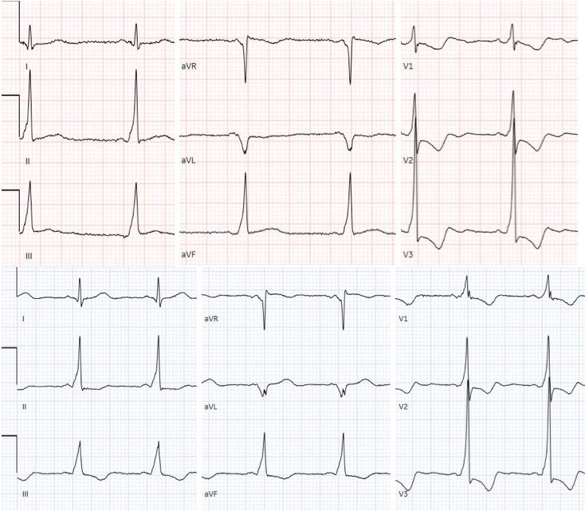
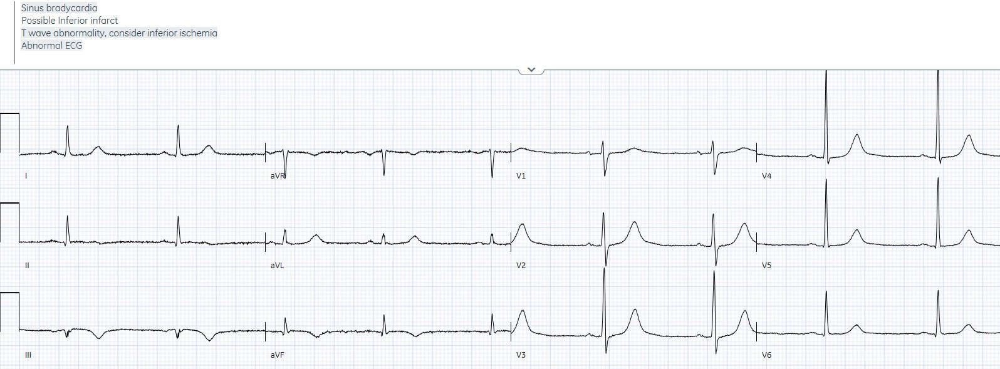
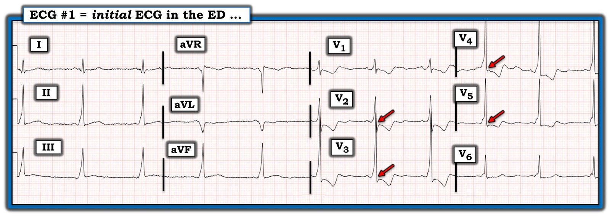

13/10/2022 — Đau ngực và ST chênh xuống ở các chuyển đạo trước tim. (Các) nguyên nhân là gì?
Bản dịch tiếng Việt của bài "Chest pain and anterior ST depression. What’s the cause(s)?" – Dr. Smith’s ECG Blog. Giữ nguyên toàn bộ 10 hình ảnh của bản gốc.
Tác giả: Jesse McLaren, có chỉnh sửa của Smith và Grauer
Một bệnh nhân 60 tuổi không có tiền sử bệnh lý đến viện vì đau ngực đã hai
giờ, lan ra tay trái, dấu hiệu sinh tồn bình thường. Bạn
nghĩ gì?


Tôi gửi bản ghi này cho bác sĩ Meyers mà không kèm thông tin nào khác, và
anh ấy trả lời: “anh có điện tâm đồ cũ để chắc chắn rằng tất cả chỉ là do
sóng delta không? Nên cẩn thận để chắc chắn đây không phải là OMI dưới-sau
chồng lên nền WPW sẵn có.”
Nói cách khác, khi có thay đổi ST/sóng T thì câu hỏi đầu tiên là có
khử cực bất thường hay không, vì khử cực bất thường sẽ kéo theo tái cực
bất thường. Ở đây có WPW với tiền kích thích (PR ngắn và sóng delta làm QRS giãn rộng). Trong ca này có sóng R cao ở các chuyển đạo trước tim (do đường phụ bên trái), theo sau
là ST chênh xuống và sóng T đảo ngược ngược hướng (discordant).
Nhưng câu hỏi thứ
hai là có hay không các dấu hiệu nhồi máu cơ tim do tắc (OMI) chồng lên. WPW
gây thay đổi ST/sóng T ngược hướng một cách phù hợp, vì vậy OMI chồng lên có thể được
nhận ra nhờ các thay đổi ST/T đồng hướng không phù hợp hoặc ngược hướng quá mức.
Ở đây, có thể có ST chênh lên đồng hướng kín đáo ở thành dưới do OMI thành dưới,
và ST chênh xuống ở các chuyển đạo trước tim có thể bị khuếch đại do OMI thành sau chồng lên.
Không có điện tâm đồ cũ, điện tâm đồ đầu tiên được ký duyệt là
không có gì đáng chú ý, và bệnh nhân ngồi chờ khám. Một giờ sau, kết quả troponin
đầu tiên trả về là 49 ng/L (bình thường <16 ở nữ và <26 ở nam), vì vậy
bệnh nhân được chuyển vào giường cấp cứu và ghi lại điện tâm đồ, trong khi
triệu chứng vẫn tiếp diễn. Bạn nghĩ gì?


Hình ảnh WPW đã biến mất (toàn bộ dẫn truyền đi qua nút AV, không qua đường phụ). Nhưng
vẫn còn sóng R cao ở các chuyển đạo trước tim kèm ST chênh xuống, cùng với ST chênh lên ở thành
dưới và sóng T tối cấp kèm ST chênh xuống/sóng T đảo ngược (STD/TWI) soi gương ở aVL. Giờ đây, không thay đổi nào trong số này có thể quy cho bất thường tái cực thứ phát: tất cả đều là thay đổi thiếu máu cục bộ nguyên phát, có giá trị chẩn đoán OMI dưới-sau. Nhưng nó không đạt tiêu chuẩn STEMI, và
không được máy tính hay bác sĩ tim mạch đọc lại (overread) nhận ra.
Bác sĩ cấp cứu không chắc nên hiểu thế nào về các
thay đổi từ điện tâm đồ này sang điện tâm đồ tiếp theo nhưng lo ngại hội chứng vành cấp (ACS). Vì vậy họ cho
bệnh nhân dùng aspirin và plavix, ghi lại điện tâm đồ và xét nghiệm lại troponin, đồng thời mời
hội chẩn tim mạch khẩn (STAT). Đây là điện tâm đồ thứ ba, ghi 30 phút sau điện tâm đồ thứ hai. Bạn
nghĩ gì?


Vẫn không có hình ảnh WPW, và OMI dưới-sau rõ hơn, nhưng vẫn STEMI
âm tính. Troponin lần hai, 90 phút sau lần đầu, đã tăng gấp đôi lên 97. Sau đó bác sĩ tim mạch khám bệnh nhân, và điện tâm đồ thứ tư
được ghi 2 giờ sau điện tâm đồ thứ ba. Bạn nghĩ gì?


Hình ảnh WPW đã quay lại, nhưng có dẫn truyền bình thường
từng lúc ở nhát 2-3, các nhát này có ST chênh lên ít hơn và sóng T bình thường. Như vậy có
yếu tố tái tưới máu, và giờ đây các chuyển đạo dưới có dẫn truyền qua đường phụ đã mất
ST chênh lên đồng hướng ban đầu và chuyển sang ngược hướng phù hợp.
Một điện tâm đồ 15 chuyển đạo được ghi 7 phút sau – với V5-6 đặt ở vị trí V8-9:


Giờ đây mọi nhát đều dẫn truyền qua đường phụ, không còn dấu hiệu
tắc nào.
Hãy so sánh với điện tâm đồ đầu tiên:


Các chuyển đạo V4-V6 bị bỏ đi vì ở một điện tâm đồ chúng là V4-V6, còn ở điện tâm đồ kia là V7-V9, nên không thể so sánh
Cả hai có mức độ tiền kích thích tương tự nhau. Nhưng so với điện tâm đồ gần đây (phía dưới), điện tâm đồ đầu tiên (phía trên) có
ST chênh lên đồng hướng ở thành dưới kèm ST chênh xuống soi gương kín đáo ở aVL do OMI thành dưới chồng lên, và ST chênh xuống ngược hướng quá mức ở
V2 do OMI thành sau chồng lên – xác nhận lời cảnh báo ban đầu của bác sĩ Meyers.
Nhưng dù điện tâm đồ cho thấy tái tưới máu thoáng qua, bệnh nhân
vẫn tiếp tục đau, troponin tăng dần, và có rối loạn vận động thành dưới-đáy (trước đây gọi là “thành sau”) trên siêu âm tim
tại giường. Vì vậy bác sĩ tim mạch đã kích hoạt phòng thông tim: tắc 100%
RCA đoạn gần, thời gian từ điện tâm đồ đến kích hoạt (ECG-to-Activation) là 4 giờ, và troponin đỉnh
24,000 ng/L.
Khi ra viện, hình ảnh WPW lại biến mất, để lộ sóng Q
ở thành dưới và sóng T đảo ngược do tái tưới máu, cùng sóng T cao ở thành trước do tái tưới máu
thành sau.


WPW, nhồi máu cơ tim cũ có sóng Q, và tắc mạch vành cấp
Tùy theo vị trí của đường phụ, hình ảnh WPW có thể giả phì đại thất (gồm RVH hoặc LVH) hoặc nhồi máu cơ tim (gồm nhồi máu thành trước, thành dưới, thành bên hoặc thành sau) [1]. Vì vậy, bước đầu tiên là nhận ra WPW: PR ngắn, sóng delta với QRS trát đậm, và thay đổi ST/T ngược hướng. WPW có thể giả nhồi máu cơ tim cũ với sóng Q tồn tại. Nhưng như một nghiên cứu về sóng giả Q trong WPW đã nhận thấy: “Trong trường hợp WPW, sự ngược hướng vectơ sóng Q–sóng T là kết quả của các thay đổi sóng T thứ phát. Do đó, vectơ khử cực và vectơ tái cực hướng theo hai chiều ngược nhau,” trong khi sóng T đảo ngược đồng hướng với sóng Q sẽ gợi ý nhồi máu cơ tim.[2]
Dẫn truyền qua đường phụ có thể xảy ra từng lúc (với các mức độ tiền kích thích khác nhau), và bị ảnh hưởng bởi thiếu máu cục bộ. Như một bài tổng quan đã giải thích: “một số
đường chỉ dẫn xung động theo chiều ngược dòng và do đó là các đường dẫn truyền
‘ẩn’; những đường này ‘im lặng’ – khoảng PR
và phức bộ QRS bình thường, không có sóng delta – trên điện tâm đồ 12 chuyển đạo lúc nghỉ.
Trong những trường hợp khác, các bó tắt dẫn truyền từng lúc, tùy thuộc vào các
yếu tố khác như việc dùng thuốc tác động lên tim, các yếu tố gây stress sinh lý kèm
phóng thích catecholamine, sự xuất hiện thiếu máu cục bộ mạch vành, và quá trình lão hóa
bình thường.”[3] Vì vậy, ở một bệnh nhân có WPW, hình ảnh này có thể bị khởi phát bởi
thiếu máu cục bộ, và cũng có một báo cáo về một bệnh nhân có WPW từ trước đã
bị “triệt đốt” bởi nhồi máu cơ tim sau khi tắc LAD.[4]
Chuỗi điện tâm đồ ở trên cho thấy những cạm bẫy và điểm then chốt khi nhận diện OMI khi có WPW:
– Điện tâm đồ #1: WPW có tiền kích thích + OMI chồng lên (thay đổi ST đồng hướng và ngược hướng quá mức)
– Điện tâm đồ #2-3: WPW với dẫn truyền bình thường, và OMI rõ ràng
– Điện tâm đồ #4: WPW từng lúc, với OMI kín đáo trong lúc dẫn truyền bình thường
– Điện tâm đồ #5: WPW có tiền kích thích và không có dấu hiệu OMI, do tái tưới máu thoáng qua
– Điện tâm đồ lúc ra viện: WPW với dẫn truyền bình thường, và tái tưới máu
Vì vậy, cách dễ nhất để nhận ra OMI khi có WPW là khi
có những giai đoạn dẫn truyền bình thường. Nhưng nếu có tiền kích thích, chúng ta có thể dựa vào nguyên tắc ngược hướng phù hợp: cũng như
các nguyên nhân khử cực bất thường khác (phì đại hoặc blốc nhánh), WPW
gây thay đổi ST/sóng T ngược hướng, vì vậy tắc mạch vành cấp có thể được nhận ra nhờ
các thay đổi đồng hướng không phù hợp hoặc ngược hướng quá mức – ví dụ ca WPW với tắc LAD gây sóng T đồng hướng này[5].
Mặt khác, tiêu chuẩn STEMI thất bại trên mọi điện tâm đồ: không những nó không nhận ra OMI dưới-sau trong lúc dẫn truyền bình thường, mà nó còn không thể nhận ra OMI khi có dẫn truyền bất thường (dù là LVH, LBBB hay WPW).
Xem 5
ca WPW giả và/hoặc che lấp OMI cấp này
Điều cần nhớ
1. WPW có thể giả phì đại hoặc nhồi máu cũ, vì vậy bước đầu tiên là nhận ra sự có mặt của đường phụ: PR ngắn, sóng delta làm QRS giãn rộng, và thay đổi ST/T ngược hướng
2.
WPW gây thay đổi ST/T ngược hướng, vì vậy OMI có thể
được nhận ra nhờ các thay đổi đồng hướng hoặc ngược hướng quá mức – và so sánh
với điện tâm đồ nền (nếu có) có thể hữu ích nếu mức độ tiền kích thích tương tự nhau
3. Các điện tâm đồ liên tiếp cũng có thể hữu ích, nhất là khi
có những giai đoạn dẫn truyền bình thường có thể bộc lộ các thay đổi thiếu máu cục bộ
nguyên phát mà không có bất thường tái cực thứ phát, hoặc những giai đoạn
tái tưới máu cho thấy sự trở lại của ngược hướng phù hợp
TÀI LIỆU THAM KHẢO
(2 tài liệu đầu về WPW với sóng giả Q giả nhồi máu cơ tim cũ, 2 tài liệu cuối về WPW + OMI do LAD)
1. Khan và Shaw. Pseudo ventricular hypertrophy and pseudo myocardial infarction in Wolff-Parkinson-White syndrome. Am J Emerg Med, 2000.
2.
Goldberger. Pseudo-infarct patterns in
Wolff-Parkinson-White syndrome: importance of Q wave-T wave vector discordance. (Hình ảnh giả nhồi máu trong hội chứng Wolff-Parkinson-White: tầm quan trọng của sự ngược hướng vectơ sóng Q–sóng T.)
3. Rosner và cs. Electrocardiography in the patient
with the Wolff-Parkinson-White syndrome: diagnostic and initial therapeutic issues.
Am J Emerg Med, 1999.
4.
Chang và Liu. Wolff-Parkinson-White syndrome
‘cured’ by myocardial infarction? CMAJ, 2014.
5.
Chang và Liu. Wolf-Parkinson-White syndrome
influenced by myocardial infarction. Int J Cardiol, 2014.


===================================
BÌNH LUẬN CỦA TÔI, bởi KEN GRAUER, MD (13/10/2022):
===================================
Tôi ngờ rằng phần lớn các ca OMI cấp xảy ra cùng với WPW — đều bị bỏ sót! Tôi không có số liệu nào về tần suất của hiện tượng phối hợp này — và cũng không biết phỏng đoán của mình chính xác đến đâu — vì những yếu tố sau:
- WPW không phổ biến ở người lớn. Nó chắc chắn có xảy ra — và mọi nhân viên y tế cấp cứu đã hành nghề được một thời gian đều đã gặp hàng loạt bệnh nhân có WPW trên điện tâm đồ. Dù vậy — tỷ lệ hiện mắc ước tính của WPW trên điện tâm đồ trong quần thể người lớn nói chung là ~2/1000 (và nhiều người trong số có WPW chỉ biểu hiện tiền kích thích trên điện tâm đồ từng lúc).
- Nhân viên y tế cấp cứu có thể có “cảm giác” rằng tình trạng này gặp thường hơn — nhưng đó là vì nhiều (phần lớn) bệnh nhân WPW được khám tại cấp cứu đến viện vì rối loạn nhịp nhanh gây vấn đề. Do đó — tình huống khó xử trong chẩn đoán khi cố nhận ra OMI cấp ở một bệnh nhân có tiền kích thích rõ (tức là WPW) trên điện tâm đồ không phải là vấn đề thường gặp. Độ chính xác của chúng ta khi đọc bất kỳ thực thể điện tâm đồ nào nhiều khả năng bị giảm đáng kể khi chúng ta chỉ gặp thực thể đó một cách không thường xuyên.
- Không có “tiêu chuẩn vàng” nào cho chẩn đoán bằng điện tâm đồ OMI cấp xảy ra cùng với WPW. Đó là vì WPW là “Kẻ bắt chước vĩ đại” (Great Mimic) — ở chỗ thực thể điện tâm đồ này có thể biểu hiện bất kỳ hình dạng nào trong vô số hình dạng QRS (tùy theo nguồn gốc và đường đi của AP [đường phụ] ). Do đó — WPW trên điện tâm đồ có thể giả LVH, RVH, LBBB, RBBB và/hoặc bất kỳ dạng IVCD bất thường nào.
- Như bác sĩ McLaren đã nêu — các tình trạng làm thay đổi khử cực thất cũng làm thay đổi tái cực thất. Với WPW — sự thay đổi này diễn ra theo cách không thể dự đoán. Tóm lại — trong nhiều trường hợp cực kỳ khó để biết hình dạng ST-T ở các chuyển đạo là kết quả của dẫn truyền qua AP — hay — là dẫn truyền qua AP cộng với thay đổi ST-T do OMI chồng lên. Tình huống khó xử nằm ở chính chỗ đó!
BÌNH LUẬN CỦA TÁC GIẢ:
Tôi đã tìm kiếm nhiều năm những ví dụ điện tâm đồ cho thấy OMI cấp cùng với WPW. Tôi có thể đếm trên đầu ngón tay số ca mà tôi đã tìm được. Đây không phải là tình huống thường gặp.
- Chính vì hiếm khi có thể tự tin nhận ra OMI cấp trên điện tâm đồ của một bệnh nhân WPW — mà chúng ta cần luôn cảnh giác với khả năng này.
- Cái hay của ca hôm nay do bác sĩ McLaren trình bày — là tiền kích thích xảy ra từng lúc. Điều này cho phép xác nhận trong những giai đoạn dẫn truyền bình thường rằng OMI cấp đang diễn ra! Nó cũng mang lại cho chúng ta hiểu biết vô giá — bằng cách minh họa qua so sánh trực tiếp (trong những giai đoạn dẫn truyền bình thường) những biến đổi hình dạng ST-T mà WPW có thể gây ra.
- Đáng tiếc, thực tế là — nhiều (phần lớn) bệnh nhân WPW đến viện vì đau ngực không biểu hiện tiền kích thích từng lúc. Trong những trường hợp như vậy — việc nhận ra OMI cấp sẽ đặc biệt khó khăn!
SUY NGHĨ CỦA TÔI khi Nhìn điện tâm đồ #1:
Giống như bác sĩ Meyers (khi bác sĩ McLaren gửi cho anh ấy bản ghi không kèm bất kỳ thông tin lâm sàng nào) — tôi đã nghi ngờ khả năng OMI thành sau cấp khi lần đầu nhìn thấy điện tâm đồ ban đầu trong ca hôm nay (Hình 1):
- Nhịp trên điện tâm đồ #1 — là nhịp chậm xoang kèm loạn nhịp xoang. Thấy sóng delta ở 11/12 chuyển đạo. Ở phần lớn các chuyển đạo này — khoảng PR rõ ràng bị rút ngắn, kéo theo QRS giãn rộng.
- LƯU Ý #1: Tùy theo mức độ tương đối của “tiền kích thích” (tức là bao nhiêu phần trăm dẫn truyền đi qua đường nút AV bình thường so với qua AP) — bạn có thể thấy sóng delta ở nhiều (hoặc ít) chuyển đạo hơn — và phức bộ QRS có thể giãn rộng nhiều hay ít hơn. Trong Hình 1 — có vẻ mức độ tiền kích thích ít nhất cũng phải gần như hoàn toàn.
- LƯU Ý #2: Tôi thấy không có gợi ý nào của WPW ở chuyển đạo I. Sóng P ở chuyển đạo này trông bình thường — theo sau nó không có sóng delta — và QRS không trông giãn rộng. Dễ hình dung rằng NẾU mức độ tiền kích thích ít hơn — thì sẽ có nhiều chuyển đạo trông “bình thường” hơn (như chuyển đạo I) — và khi đó có thể không phải lúc nào cũng rõ ràng (hoặc thậm chí không thấy được) rằng một bệnh nhân có WPW chỉ từ một điện tâm đồ duy nhất.
VÌ SAO Tôi Nghi Ngờ …
Tôi đã thêm các mũi tên MÀU ĐỎ vào 4 chuyển đạo trên điện tâm đồ #1 đã khiến tôi nghi ngờ OMI thành sau cấp chồng lên các thay đổi tái cực của WPW.
- Đúng là có ST dạng vòm (coving) kín đáo, không như dự kiến ở các chuyển đạo dưới trên điện tâm đồ #1 (mà chúng ta đã thấy khi so sánh với điện tâm đồ thứ 2 và thứ 3 trong lúc dẫn truyền bình thường ở ca này — tương ứng với ST chênh lên ở các chuyển đạo dưới) — nhưng hình dạng ST-T ở các chuyển đạo dưới trong Hình 1 không có giá trị chẩn đoán đối với tôi. Tôi hoàn toàn không tự tin rằng hình dạng này biểu hiện OMI thành dưới.
- Ngược lại — tôi đơn giản là không quen thấy điểm J chênh xuống ở các chuyển đạo mà tôi đã đánh dấu bằng mũi tên MÀU ĐỎ trong Hình 1 như một thay đổi tái cực đơn thuần do WPW. Dù tôi không chắc chắn về ST chênh xuống ở các chuyển đạo này (mà tôi nghĩ có thể phản ánh thay đổi liên quan đến WPW) — chính mức độ điểm J chênh xuống bất ngờ ở bệnh nhân có WPW và đau ngực mới khởi phát này đã khiến tôi kết luận — “Hãy coi là OMI cấp cho đến khi chứng minh được điều ngược lại”.
Các ví dụ Bổ sung về OMI kèm WPW:
- BẤM VÀO ĐÂY — để xem một ca tương tự ở bệnh nhân có WPW và đau ngực mới khởi phát. Bạn có nhận ra OMI thành sau cấp không?
- BẤM VÀO ĐÂY — để xem một ví dụ OMI cấp ở bệnh nhân có tiền kích thích từng lúc (xảy ra cách một nhát)!

